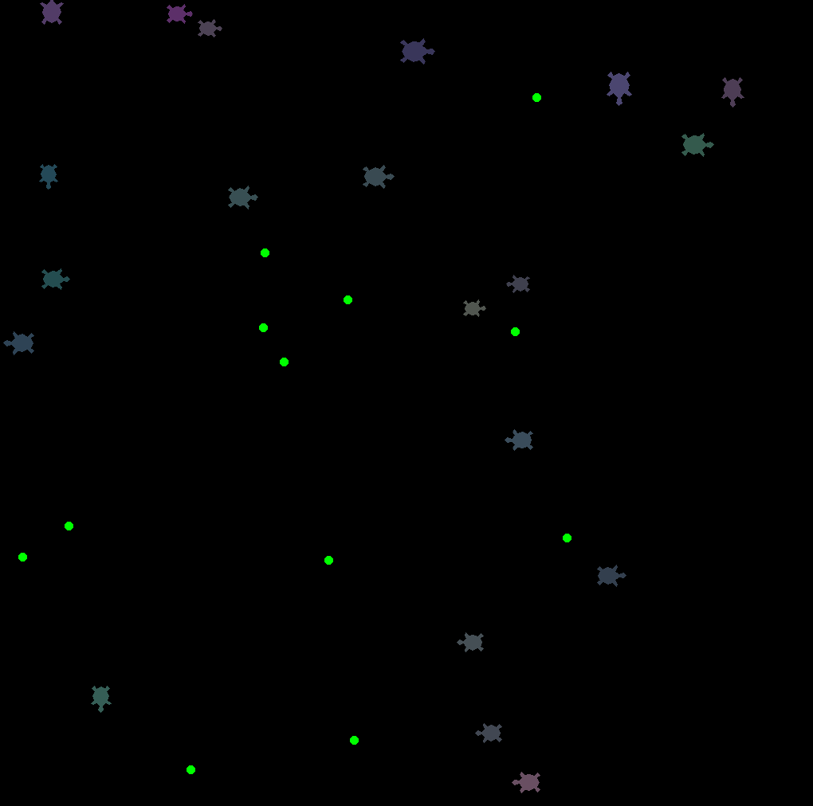

Turtle Evolve

Inspired by Primer's video, I decided to make a turtle evolution simulator.
The turtles need apples for energy, energy to move, and each cycle they move, losing energy. When they are low on energy, they try to reach the border,
where they "sleep" if they collected apples, and reproduce by an interger equal to the number of apples they collected - 1.
The turtle's offspring have slight mutations:
• SIZE - How large they are (larger turtles can eat smaller for energy, but use more energy to move per cycle);
• SPEED - How far they move per cycle (further uses more energy);
• SPEED - How far away they can detect apples, predetors (larger turtles, from which they flee), and prey (smaller turtles, which they will attempt to consume);
• RISK - And how low on energy will risk being before returning to the edge.
The last three factors are displayed by the red, green and blue components of their colour respectively.
So, over the course of many generations, the turtles with the best statistics for their environment will outcompete the others, and a local optima for said statistics will be found.
I also found the simulation very enjoyable to watch!
Click the code below to download the python file (I hope you excuse my very sub-optimal code, I wrote this a while ago, perhaps I'll return to do something like this in Unity):

<
Contents:
Click to jump to chapter: